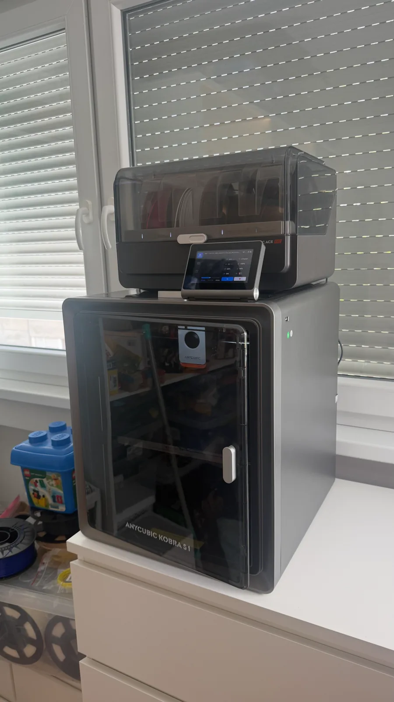

← all notes
04.08.2026#3d-printing
Bought myself a new printer — Anycubic Kobra S1 Combo. Went back to where I started: CoreXY kinematics, where the bed only moves up and down and the head travels above it. My first printer had the same mechanics — a Flying Bear Ghost 5. After that it was bed-slingers of various kinds.
So far I like everything: compared to the old printer it's quieter and takes up less space on the desk. The old one was pretty loud — overnight I'd either not leave a print running, or, if I really wanted to, set a reduced speed. And now I don't have to worry about the cat sticking its nose into hot parts.
The old printer's motherboard apparently died. Decided not to sink money and time into repairing it — printing matters more to me right now than digging through its guts.
Got back to a couple of projects that had been stalled without a printer.

So far I like everything: compared to the old printer it's quieter and takes up less space on the desk. The old one was pretty loud — overnight I'd either not leave a print running, or, if I really wanted to, set a reduced speed. And now I don't have to worry about the cat sticking its nose into hot parts.
The old printer's motherboard apparently died. Decided not to sink money and time into repairing it — printing matters more to me right now than digging through its guts.
Got back to a couple of projects that had been stalled without a printer.
Comments